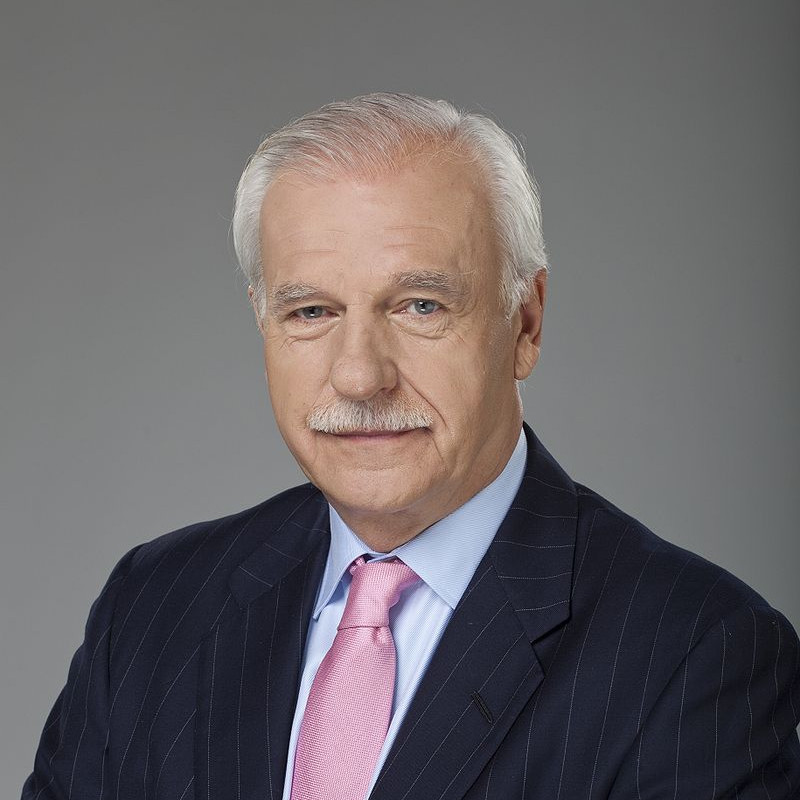

Winner

Aleksander Kwaśniewski

2. Andrzej Marian Olechowski

3. Marian Krzaklewski
Turnout
62%
Results
-
Candidate Votes Percentage Aleksander Kwaśniewski 13928 45% Andrzej Marian Olechowski 7699 25% Marian Krzaklewski 6207 20% Andrzej Lepper 851 3% Jarosław Kalinowski 818 3% Lech Wałęsa 461 1% Janusz Korwin-Mikke 383 1% Jan Łopuszański 181 1% Dariusz Maciej Grabowski 142 0% Piotr Ikonowicz 45 0% Tadeusz Adam Wilecki 44 0% Bogdan Pawłowski 29 0%